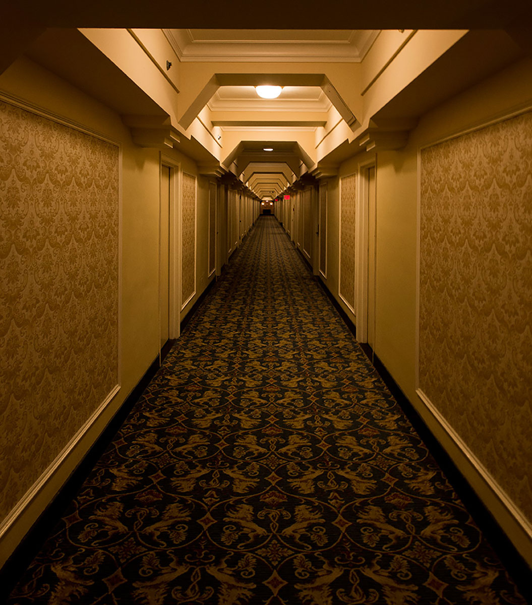
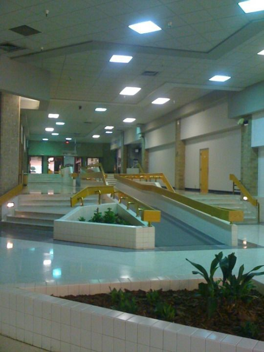
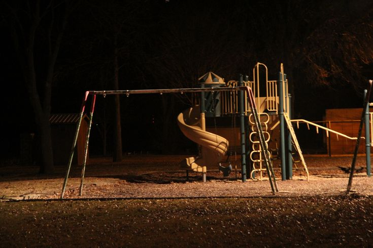
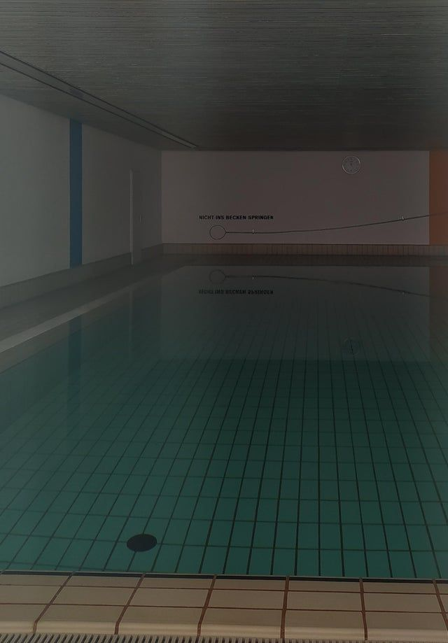

Liminal Spaces
Back
Liminal Spaces are a genre of photos or aesthetic that has recently been gaining popularity on the internet. The images themselves are mostly of strange and familiar places, mostly after dark. The main factor of these photos is that there are no people in them, giving them an unsettling feeling, which I personally love. I also find comfort in them, since they sometimes emit an odd feeling of nostalgia.



